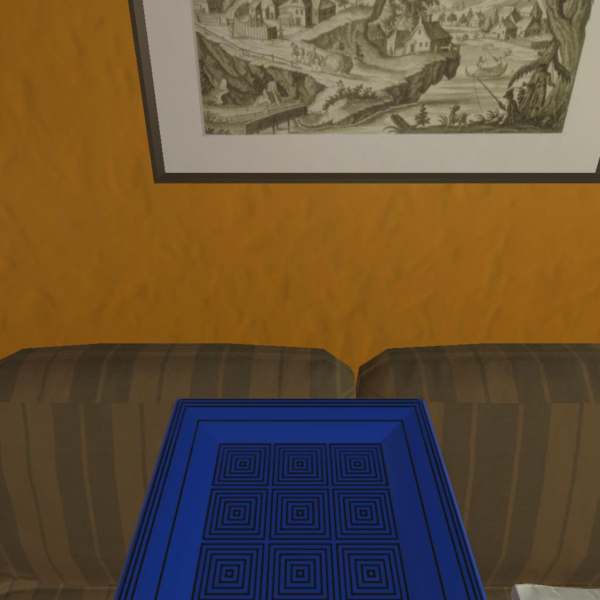

---------------------------------------------------------task: 3---------------------------------------------------------
--------------------------------------------------------------------------------------------------------------------------------------------------------------------
--------------------------------------------------------------------------------------------------------------------------------------------------------------------
Step:--------------------------------------------------------------------------16-------------------------------------------------------------------------------
----------------------------------------
VLM Prompt:
**Task**
Please perform as an embodied AI agent. Our final objective is to examine the plate with the floorlamp. Below is the plan for completing the task, the current observation, alongside historical data and admissible actions for the next step. Please determine the best action for the next step!
**Plan**
Below is a detailed step-by-step plan to complete the task.
1. Find a plate.
2. Pick up the plate.
3. Find a floorlamp.
4. Turn on the floorlamp.
5. Hold the plate under the light of the floorlamp to examine it.
**Current Observation**
Displayed is an image capturing the current position of the agent.
**History Information**
Displayed are the previous observations with their corresponding actions.
State 1:
1. Step Index in the Plan: 1
2. Objects: TV Stand
3. Action: go to coffeetable 1
State 2:
1. Step Index in the Plan: Not specified, but involves picking up a plate
2. Objects: Coffee Table, Plate
3. Action: take plate 1 from coffeetable 1
State 3:
Step Index in the Plan: 3
Objects: Floorlamp, Sofa
Action: use floorlamp 1
State 4:
1. Step Index in the Plan: 4
2. Objects: Floorlamp, Sofa, Plate
3. Action: examine plate 1
State 5:
1. Step Index in the Plan: 4
2. Objects: Sofa, Floorlamp
3. Action: go to sofa 1
State 6:
1. Step Index in the Plan: 6 (presumably, based on context)
2. Objects: Sofa, Plate (previously collected)
3. Action: go to sofa 1
State 7:
1. Step Index in the Plan: 4
2. Objects: Sofa, Plate, Floorlamp
3. Action: put plate 1 in/on sofa 1
State 8:
2. Step Index in the Plan: 5
3. Objects: Sofa, Plate (in agent's possession)
4. Action: examine plate 1
State 9:
1. Step Index in the Plan: 5
2. Objects: Sofa, Plate (in agent's possession), Floorlamp
3. Action: go to sofa 1
State 10:
1. Step Index in the Plan: Unknown, currently need to examine the plate under the floorlamp's light
2. Objects: Plate (held by agent), Sofa, Floorlamp (not currently visible)
3. Action: go to sofa 1
State 11:
2. Step Index in the Plan: 2
3. Objects: Plate, Floorlamp, Sofa
4. Action: go to sofa 1
State 12:
1. Step Index in the Plan: Not specified
2. Objects: Plate, Sofa, (Floorlamp not currently observed)
3. Action: go to sofa 1
State 13:
Step Index in the Plan: 5
Objects: Plate, Sofa
Action: go to armchair 1
State 14:
1. Step Index in the Plan: 5
2. Objects: Armchair, Garbage Can, Coffee Table
3. Action: go to sofa 1
State 15:
1. Step Index in the Plan: 5
2. Objects: Plate, Sofa, Floorlamp (not observed)
3. Action: go to sofa 1
State 16:
1. Step Index in the Plan: 5
2. Objects: Plate (held by the agent)
3. Action: go to sofa 1
**Admissible Actions**
(1): go to armchair 1
(2): go to garbagecan 1
(3): go to tvstand 1
(4): go to shelf 1
(5): go to shelf 2
(6): go to sofa 1
(7): go to coffeetable 1
(8): go to sidetable 1
(9): go to sidetable 2
(10): go to drawer 1
(11): go to shelf 3
(12): go to shelf 4
(13): go to shelf 5
(14): put plate 1 in/on sofa 1
(15): examine plate 1
(16): examine sofa 1
**Analysis Guideline**
1. Analyze the history and current observation, and then determine our current step in the plan and our current place.
2. List all visible objects related to the task in the current observation, without summarizing any as "various items."
3. Analyze the objects in the current observation based on the history and the requirements for the current step, and then determine if we can complete the step with the current observation.
4. Analyze and decide on the most appropriate action to take.
5. Summarize the analysis using the following format: "Analysis: [The summarization of the analysis], The Most Appropriate Action: (i which is the integer.): [Selected action]"
**Notes**
1. We must complete each step of the plan in order and cannot skip steps when the previous ones are not finished.
2. For "Go to" actions listed as "go to xxx [n]", interpret this as there are n distinct actions available: "go to xxx 1", "go to xxx 2", ..., "go to xxx n". Select one specific action from these options instead of using "go to xxx [n]".
3. If receptacles such as drawers, cabinets, and so forth are closed in the current observation, we may try to open them.
4. Pay attention to synonyms and ensure clarity in the terms used.
5. We must determine and provide the single action which must be in the **Admissible Actions**.
6. If there is no history available, we are at the first step and the current place is "Unknown".
**Answer**
Please select the most suitable action by following the **Analysis Guideline**, keeping the above **Notes** in mind.
----------------------------------------
----------------------------------------
VLM Response:
Analysis: The current step in the plan is to examine the plate under the light of the floorlamp. The current place is near the sofa, which can be inferred from the repeated action "go to sofa 1" and the visible part of the sofa in the current observation. The visible objects related to the task in the current observation are the sofa and the plate (held by the agent). The floorlamp is not observed in the current image, which is necessary to complete the current step. Since the agent has already picked up the plate and the last specified action was to examine the plate, the agent should now find and turn on the floorlamp to proceed with the examination. However, there are no actions available to interact with the floorlamp directly. The most appropriate action would be to move to a different location from where the floorlamp might be visible or accessible. Among the admissible actions, none mention the floorlamp, but since the floorlamp was not observed from the sofa's position, the agent should try moving to a different spot. The "go to armchair 1" action might offer a different vantage point in the room, potentially revealing the location of the floorlamp.
The Most Appropriate Action: (1): go to armchair 1
----------------------------------------
----------------------------------------
>>> Refine VLM Response and Get Pure Action: go to armchair 1
----------------------------------------
-----------------------------------------------------------------
Running time: 9.524293661117554 seconds
Total Money: 0
-----------------------------------------------------------------
-----------------------------------------------------------------
Summarization Prompt:
**Context**
Analysis: Since there is no history information, we are at the first step in the plan, which is to find a statue. The current place is unknown. In the current observation, we see a floorlamp next to an armchair with a small table that has a small object on it, which could potentially be the statue we are looking for. Since the plan requires us to find a statue first and it appears there might be one on the table next to the armchair, we should investigate this object to determine if it is the statue we need.
The Most Appropriate Action: (1): go to armchair 1
**Summary**
1. Step Index in the Plan: 1
2. Objects: Floorlamp, Armchair, Small Table, Small Object (potential statue)
3. Action: go to armchair 1
**Context**
Analysis: The current step in the plan is to examine the plate under the light of the floorlamp. The current place is near the sofa, which can be inferred from the repeated action "go to sofa 1" and the visible part of the sofa in the current observation. The visible objects related to the task in the current observation are the sofa and the plate (held by the agent). The floorlamp is not observed in the current image, which is necessary to complete the current step. Since the agent has already picked up the plate and the last specified action was to examine the plate, the agent should now find and turn on the floorlamp to proceed with the examination. However, there are no actions available to interact with the floorlamp directly. The most appropriate action would be to move to a different location from where the floorlamp might be visible or accessible. Among the admissible actions, none mention the floorlamp, but since the floorlamp was not observed from the sofa's position, the agent should try moving to a different spot. The "go to armchair 1" action might offer a different vantage point in the room, potentially revealing the location of the floorlamp.
The Most Appropriate Action: (1): go to armchair 1
Please summarize the context by following above examples when providing the summary, and ensure that only the summary is included, without any extra explanation.
**Summary**
-----------------------------------------------------------------
-----------------------------------------------------------------
Summarization Response:
1. Step Index in the Plan: Unknown (Examine plate under floorlamp light)
2. Objects: Sofa, Plate (held by agent), Floorlamp (not observed)
3. Action: go to armchair 1
-----------------------------------------------------------------
-----------------------------------------------------------------
Text Observation:You arrive at loc 0. On the armchair 1, you see a television 1.
-----------------------------------------------------------------
UNSUCCEED